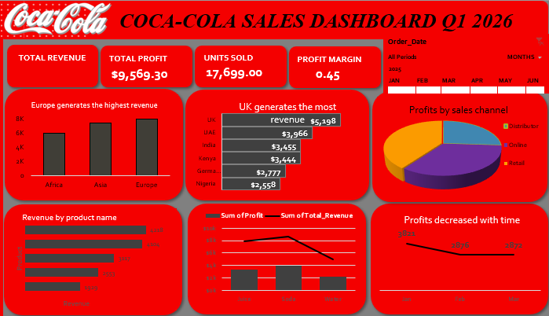
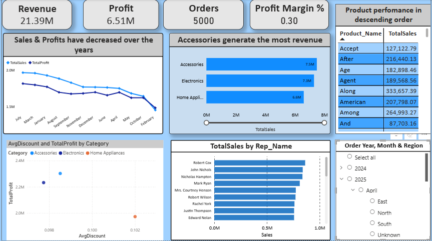
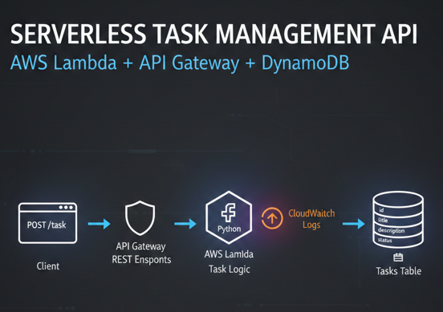
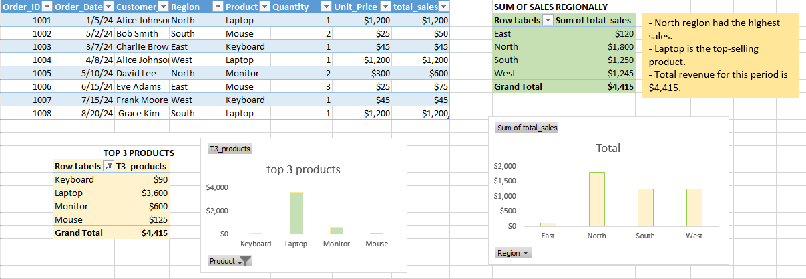
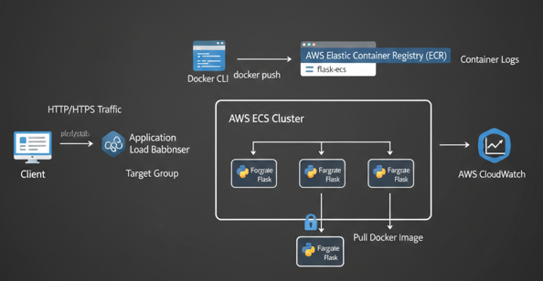
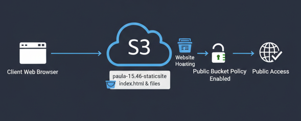
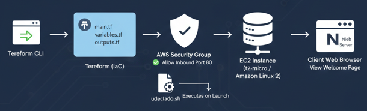

A collection of my work across Cloud Computing, Data Analysis, and Data Visualization. Explore by category.
I help businesses deploy and manage cloud applications using AWS. I build scalable, secure, and cost-efficient cloud systems including serverless apps and containerized deployments.
AWS • Docker • Lambda • EC2 • API GatewayI help businesses turn raw data into meaningful insights that support decision-making. I clean and analyze datasets, identify trends, and build interactive dashboards that clearly communicate performance and opportunities. My focus is on making data easy to understand and actionable for business growth.
Excel • SQL • Python • Power BI
Analyzed sales data using Excel by cleaning raw data, building pivot tables, and creating an interactive dashboard.
View on GitHub
Built Power BI dashboards with KPIs, maps, and charts to analyze sales performance.
View on GitHub
Built a serverless CRUD API using AWS Lambda, API Gateway, and DynamoDB.
View on GitHub
Cleaned and analyzed retail dataset using Excel and structured reporting.
View on GitHub
Deployed containerized Flask app using ECS Fargate, ECR, and Load Balancer.
View on GitHub
Hosted a static website on AWS S3 with public access configuration.
View on GitHub
Provisioned EC2 and deployed Nginx using Terraform automation.
View on GitHub